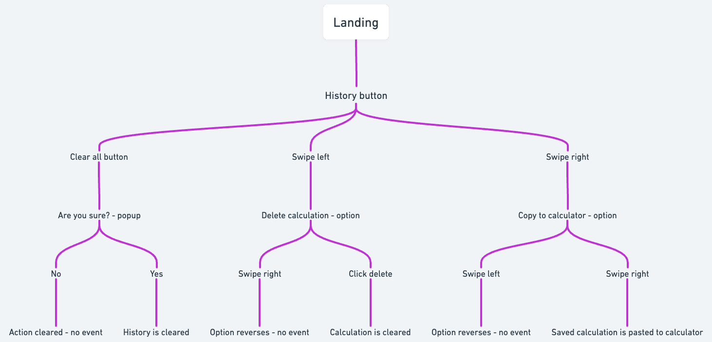
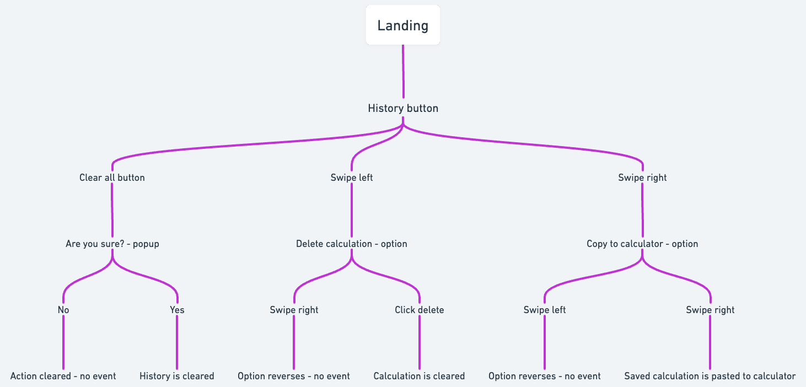
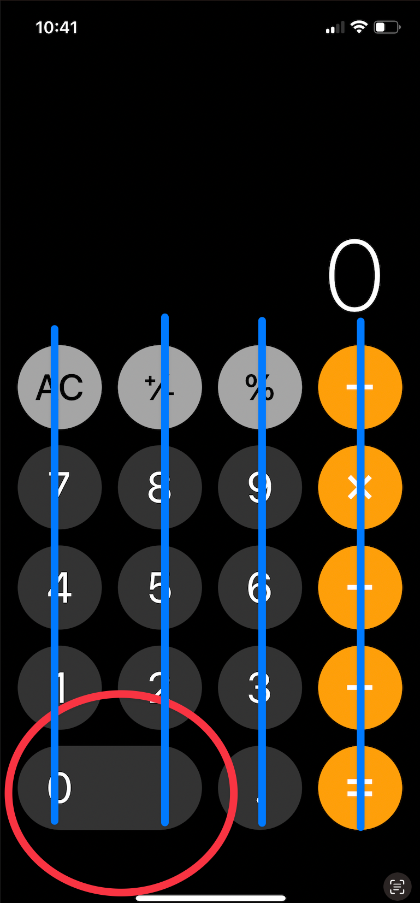
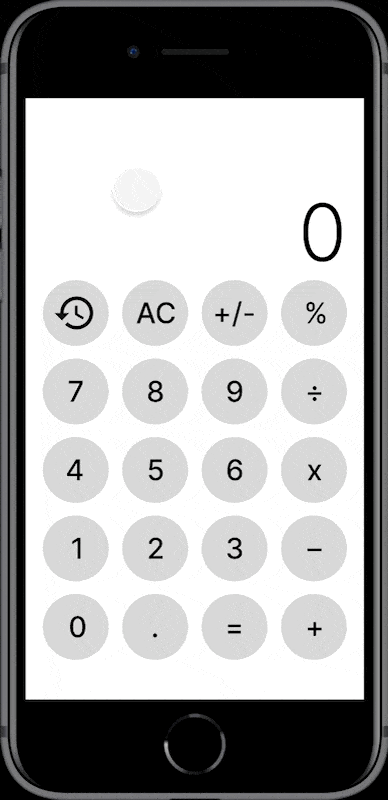
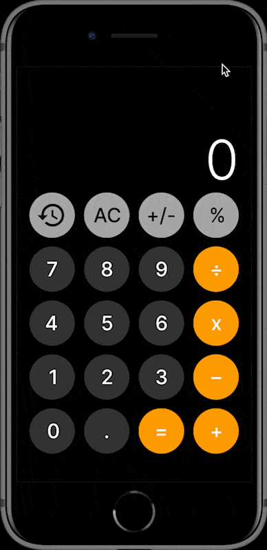

Case Study
Design Problem
The Calculator from Apple is a minimal app that allows users to commit calculations and receive fast results easily. With a few updates, this app could help users solve more problems more efficiently. One feature that could massively improve user interaction with this app is a solution history.
User Persona
The ideal customer is a woman named Alex. Alex is in their early 20’s and is single. She is a prospective university student and works part-time. Alex lives in Sacramento, is familiar with productivity gadgets and is passionate about efficiency and practicality.
Solution Hypothesis
How would a solution history feature improve user interaction with the Calculator? A significant issue users experience using the Calculator is that there is no in-app system to store previous calculation outputs. When computing systems of equations, human memory is unreliable. This is why it is needed to implement a solution history feature. This feature would allow users to track previously computed outputs and reuse them in new computations.
 

Challenges I faced
The obvious design issue is where to place this new feature. Like many Apple products, the Calculator looks complete, like everything present on the app is meant to be there, and anything that is not present isn’t. However, upon inspection it became clear what the solution was, and where to place the new feature.
As shown, there is space if you make it. By applying the same design of all other buttons to the zero button, there becomes an available space, without disrupting the current flow of the app design.
Solution Experiments
How my solution solves the problem
As demonstrated, a solution history feature allows users to track previously computed outputs for easy reuse in new computations. Reducing user frustration, improving efficiency, ease of use, and overall product experience.
Closing remarks
With a solution history feature, users are more enabled than ever to solve problems using the Calculator app. Without the need for non-in-app tools, like pen and paper. Users will be able to track and utilize computed equation results.
